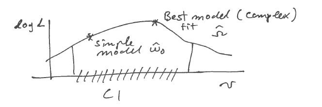

6 Optimality properties and conclusion
6.1 Properties of maximum likelihood encountered so far
- MLE is a special case of relative entropy minimisation valid for large samples.
- MLE can be seen as generalisation of least squares (and conversely, least squares is a special case of ML).
\[\begin{align*} \begin{array}{cc} \text{Kullback-Leibler 1951}\\ \textbf{Entropy learning: minimise } D_{\text{KL}}(F_{\text{true}},F_{\boldsymbol \theta})\\ \downarrow\\ \text{large } n\\ \downarrow\\ \text{Fisher 1922}\\ \textbf{Maximise Likelihood } L(\boldsymbol \theta|x_1, \dots, x_n)\\ \downarrow\\ \text{normal model}\\ \downarrow\\ \text{Gauss 1805}\\ \textbf{Minimise squared error } \sum_i (x_i-\theta)^2\\ \end{array} \end{align*}\]
Given a model, derivation of the MLE is basically automatic (only optimisation required)!
MLEs are consistent, i.e. if the true underlying model \(F_{\text{true}}\) with parameter \(\boldsymbol \theta_{\text{true}}\) is contained in the set of specified candidates models \(F_{\boldsymbol \theta}\) then the MLE will converge to the true model.
Correspondingly, MLEs are asympotically unbiased.
However, MLEs are not necessarily unbiased in finite samples (e.g. the MLE of the variance parameter in the normal distribution).
The maximum likelihood is invariant against parameter transformations.
In regular situations (when local quadratic approximation is possible) MLEs are asympotically normally distributed, with the asymptotic variance determined by the observed Fisher information.
In regular situations and for large sample size MLEs are asympotically optimally efficient (Cramer-Rao theorem): For large samples the MLE achieves the lowest possible variance possible in an estimator — this is the so-called Cramer-Rao lower bound. The variance decreases to zero with \(n \rightarrow \infty\) typically with rate \(1/n\).
The likelihood ratio can be used to construct optimal tests (in the sense of the Neyman-Pearson theorem).
6.2 Summarising data and the concept of minimal sufficiency
Another important concept in statistics and likelihood theory (especially when applied to the exponential family) is that of a minimally sufficient statistic to optimally summarise the information available in the data about a parameter in a model.
Generally, a statistic \(T(x_1, \ldots, x_n)= T(x_i)\) is function of the data \(x_1, \ldots, x_n\). In the following we write \(x_i\) as a shorthand for the complete data set with \(n\) observations. The statistic \(T(x_i)\) can be of any type and value (scalar, vector, matrix etc. — even a function). \(T(x_i)\) is called a summary statistic if it describes important aspects of the data such as location (e.g. the average \(\text{avg}(x_i) =\bar{x}\), the median) or scale (e.g. standard deviation, interquartile range).
A statistic \(T(x_i)\) is said to be sufficient for a parameter \(\boldsymbol \theta\) in a model if the corresponding likelihood function can be written in terms of \(T(x_i)\) so that \[ L(\boldsymbol \theta| x_i) = h( T(x_i) , \boldsymbol \theta) \, k(x_i) \,, \] where \(h(x)\) and \(k(x)\) are positive-valued functions, and or equivalently on log-scale \[ l_n(\boldsymbol \theta) = \log h( T(x_i) , \boldsymbol \theta) + \log k(x_i) \,. \] This is known as the Fisher-Pearson factorisation. By construction, estimation and inference about \(\boldsymbol \theta\) based on the factorised likelihood \(L(\boldsymbol \theta)\) is mediated through the sufficient statistic \(T(x_i)\) and does not require the original data \(x_i\). Instead, the sufficient statistic \(T(x_i)\) contains all the information in \(x_i\) required to learn about the parameter \(\boldsymbol \theta\). Therefore, if the MLE \(\hat{\boldsymbol \theta}_{ML}\) of \(\boldsymbol \theta\) exists and is unique then the MLE is a unique function of the sufficient statistic \(T(x_i)\). If the MLE is not unique then it can be chosen to be function of \(T(x_i)\). Note that a sufficient statistic always exists since the data \(x_i\) are themselves sufficient statistics, with \(T(x_i) = x_i\). Furthermore, sufficient statistics are not unique since applying a one-to-one transformation to \(T(x_i)\) yields another sufficient statistic.
Every sufficient statistic \(T(x_i)\) induces a partitioning of the space of data sets by clustering all hypothetical outcomes for which the statistic \(T(x_i)\) assumes the same value \(t\): \[\mathcal{X}_t = \{x_i: T(x_i) = t\}\] The data sets in \(\mathcal{X}_t\) are equivalent in terms of the sufficient statistic \(T(x_i)\). Note that the dimensions of \(T(x_i)\) may be much smaller than those of \(x_i\). Instead of \(n\) data points as few as one or two summaries may be sufficient to fully convey all the information in the data about the model parameters. Thus, transforming data \(x_i\) using a sufficient statistic \(T(x_i)\) may result in substantial data reduction.
Data sets \(x_i\) and \(y_i\) for which the ratio of the likelihoods \(L(\boldsymbol \theta| x_i )/L(\boldsymbol \theta| y_i)\) does not depend on \(\boldsymbol \theta\) (so the two likelihoods are proportional to each other by a constant) are called likelihood equivalent because a likelihood-based procedure to learn about \(\boldsymbol \theta\) will draw identical conclusions from \(x_i\) and \(y_i\). For data sets \(x_i, y_i \in \mathcal{X}_t\) equivalent with respect to a sufficient statistic \(T(x_i)\) it follows directly from the Fisher-Pearson factorisation that the ratio \[L(\boldsymbol \theta| x_i )/L(\boldsymbol \theta| y_i) = k(x_i)/ k(y_i)\] and thus is constant with regard to \(\boldsymbol \theta\). Consequently, all data sets in \(\mathcal{X}_t\) are also likelihood equivalent. However, the converse is not true: depending on the sufficient statistics there usually will be many likelihood equivalent data sets that are not part of the same set \(\mathcal{X}_t\).
Of particular interest is therefore to find those sufficient statistics that achieve the coarsest partitioning of the sample space and thus may allow the highest data reduction. Specifically, a minimal sufficient statistic is a sufficient statistics \(T(x_i)\) for which all likelihood equivalent data sets also are equivalent under \(T(x_i)\). Therefore, to check whether a sufficient statistic \(T(x_i\) is minimally sufficient we verify whether for any two likelihood equivalent data sets \(x_i\) and \(y_i\) it also follows that \(T(x_i) = T(y_i)\). If this holds true then \(T(x_i)\) is a minimally sufficient statistic.
An equivalent non-operational definition is that a minimal sufficient statistic \(T(x_i)\) is a sufficient statistic that can be computed from any other sufficient statistic \(S(x_i)\). This follows from the above directly: assume any sufficient statistic \(S(x_i)\), this defines a corresponding set \(\mathcal{X}_s\) of likelihood equivalent data sets. By implication any \(x_i, y_i \in \mathcal{X}_s\) will ncecessarily also be in \(\mathcal{X}_t\), thus whenever \(S(x_i)=S(y_i)\) we also have \(T(x_i)=T(y_i)\), and therefore \(T(x_i)\) is a function of \(S(x_i)\).
A trivial but important example of a minimal sufficient statistic is the likelihood function itself since by definition it can be computed from any set of sufficient statistics. Thus the likelihood function \(L(\boldsymbol \theta)\) captures all information about \(\boldsymbol \theta\) that is available in the data. In other words, it provides an optimal summary of the observed data with regard to a model. Note that in Bayesian statistics (to be discussed in part 2 of the module) the likelihood function is used as proxy/summary of the data.
Example 6.1 Sufficient statistics for the parameters of the normal distribution:
The normal model \(N(\mu, \sigma^2)\) with parameter vector \(\boldsymbol \theta= (\mu, \sigma^2)^T\) and log-likelihood \[ l_n(\boldsymbol \theta) = -\frac{n}{2} \log(2 \pi \sigma^2) - \frac{1}{2 \sigma^2} \sum_{i=1}^n (x_i-\mu)^2 \] One possible set of minimal sufficient statistics for \(\boldsymbol \theta\) are \(\bar{x}\) and \(\overline{x^2}\), and with these we can rewrite the log-likelihood function without any reference to the original data \(x_i\) as follows \[ l_n(\boldsymbol \theta) = -\frac{n}{2} \log(2 \pi \sigma^2) -\frac{n}{2 \sigma^2} (\overline{x^2} - 2 \bar{x} \mu + \mu^2) \] An alternative set of minimal sufficient statistics for \(\boldsymbol \theta\) consists of \(s^2 = \overline{x^2} - \bar{x}^2 = \widehat{\sigma^2}_{ML}\) as and \(\bar{x} = \hat{\mu}_{ML}\). The log-likelihood written in terms of \(s^2\) and \(\bar{x}\) is \[ l_n(\boldsymbol \theta) = -\frac{n}{2} \log(2 \pi \sigma^2) -\frac{n}{2 \sigma^2} (s^2 + (\bar{x} - \mu)^2 ) \]
Note that in this example the dimension of the parameter vector \(\boldsymbol \theta\) equals the dimension of the minimal sufficient statistic, and furthermore, that the MLEs of the parameters are in fact minimal sufficient!
The conclusion from Examples 6.1 holds true more generally: in the exponential family (which contains the normal distribution as special case) the MLEs of the natural parameters are minimal sufficient statistics. Thus, there will typically be substantial dimension reduction from the raw data to the sufficient statistics.
However, outside the exponential family the MLE is not necessarily a minimal sufficient statistic, and may not even be a sufficient statistic. This is because a (minimal) sufficient statistic of the same dimension as the parameters does not always exist. A classic example is the Cauchy distribution for which the minimal sufficient statistics are the ordered observations, thus the MLE of the parameters do not constitute sufficient statistics, let alone minimal sufficient statistics. However, the MLE is of course still a function of the minimal sufficient statistic.
In summary, the likelihood function acts as perfect data summariser (i.e. as minimally sufficient statistic), and in exponential families (e.g. Normal distribution) the MLEs of the parameters \(\hat{\boldsymbol \theta}_{ML}\) are minimimally sufficient.
Finally, while sufficiency is clearly a useful concept for data reduction one needs to keep in mind that this is always in reference to a specific model Therefore, unless one strongly believes in a certain model it is generally a good idea to keep (and not discard!) the original data.
6.3 Concluding remarks on maximum likelihood
6.3.1 Remark on KL divergence
Finding the model \(F_{\boldsymbol \theta}\) that best approximates the underlying true model \(F_0\) is done by minimising the relative entropy \(D_{\text{KL}}(F_0,F_{\boldsymbol \theta})\). For large sample size \(n\) we may approximate \(F_0\) by the empirical distribution\(\hat{F}_0\), and minimising \(D_{\text{KL}}(\hat{F}_0,F_{\boldsymbol \theta})\) then yields the method of maximum likelihood.
However, since the KL divergence is not symmetric there are in fact two ways to minimise the divergence between a fixed \(F_0\) and the optimised \(F_{\boldsymbol \theta}\), each with different properties:
\[\begin{align*} \begin{array}{ll} \textbf{"forward KL", "approximation KL":}\\ \\ \\ \textbf{"reverse KL", "inference KL":}\\ \\ \\ \\ \end{array} \begin{array}{ll} \min_{\boldsymbol \theta} D_{\text{KL}}(F_0,F_{\boldsymbol \theta})\\ \\ \\ \min_{\boldsymbol \theta} D_{\text{KL}}(F_{\boldsymbol \theta},F_0)\\ \\ \\ \\ \end{array} \begin{array}{ll} \text{"M (Moment) projection"}\\ \text{has } \textbf{zero avoiding } \text{property}\\ f_{\boldsymbol \theta}(x)>0 \text{ whenever } f_0(x)>0\\ \\ \text{"I (Information) projection"}\\ \text{has } \textbf{zero forcing } \text{property}\\ f_{\boldsymbol \theta}(x)=0 \text{ whenever } f_0(x)=0\\ \\ \\ \end{array} \end{align*}\]
Maximum likelihood is based on “forward KL”, whereas Bayesian updating and Variational Bayes approximations uses the “reverse KL”.
6.3.2 What happens if \(n\) is small?
From the long list of optimality properties of ML it is clear that for large sample size \(n\) the best estimator will typically be the MLE.
However, for small sample size it is indeed possible (and necessary) to improve over the MLE (e.g. via Bayesian estimation or regularisation). Some of these ideas will be discussed in Part II.
- Likelihood will overfit!
Alternative methods need to be used:
- regularised/penalised likelihood
- Bayesian methods
which are essentially two sides of the same coin.
Classic example of a simple non-ML estimator that is better than the MLE: Stein’s example / Stein paradox (C. Stein, 1955):
- Problem setting: estimation of the mean in multivariate case
Maximum likelihood estimation breaks down! \(\rightarrow\) average (=MLE) is worse in terms of MSE than Stein estimator.
For small \(n\) the asymptotic distributions for the MLE and for the LRT are not accurate, so for inference in these situations the distributions may need to be obtained by simulation (e.g. parametric or nonparametric bootstrap).
6.3.3 Model selection
- CI are sets of models that are not statistically distinguishable from the best ML model
- in doubt, choose the simplest model compatible with data
- better prediction, avoids overfitting
- Useful for model exploration and model building.

- Note that, by construction, the model with more parameters always has a higher likelihood, implying likelihood favours complex models
- Complex model may overfit!
- For comparison of models penalised likelihood or Bayesian approaches may be necessary
Model selection in small samples and high dimension is challenging
- Recall that the aim in statistics is not about rejecting models (this is easy as for large sample size any model will be rejected!)
- Instead, the aim is model building, i.e. to find a model that explains the data well and that predicts well!
Typically, this will not be the best-fit ML model, but rather a simpler model that is close enough to the best / most complex model.